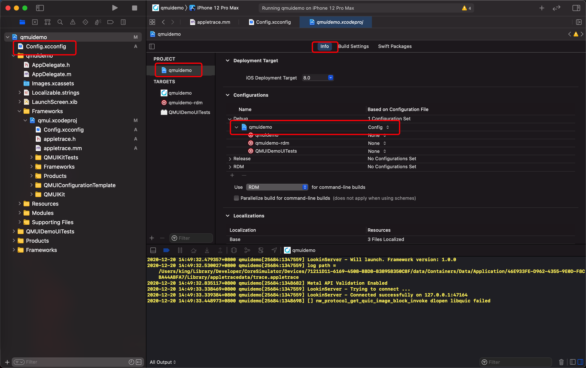
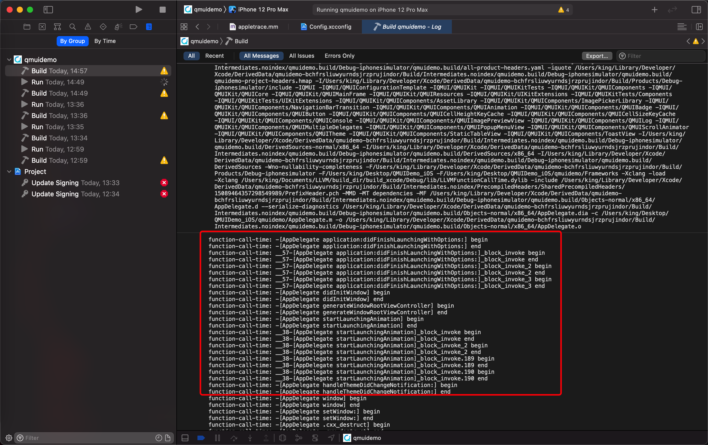
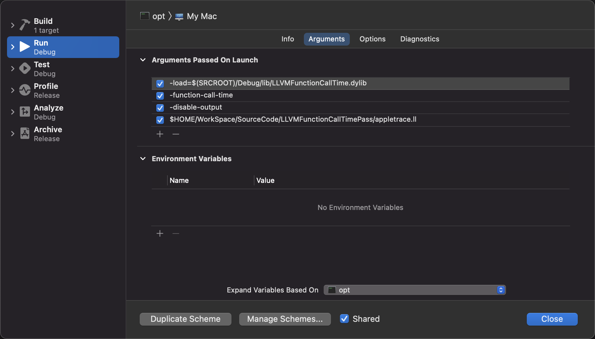

自定义 LLVM PASS 实现 函数耗时插桩统计
下载源码
mkdir LLVM
cd LLVM
wget https://github.com/llvm/llvm-project/archive/llvmorg-11.0.0.zip
unzip llvmorg-11.0.0.zip
编写编译脚本
- 在
LLVM目录下,创建一个build.sh文件,拷贝下面内容
#!/usr/bin/env bash
set -e
set -o pipefail
set -u
ROOT_DIR=`pwd`
SOURCE_CODE_DIR=$ROOT_DIR/llvm-project-llvmorg-11.0.0
BUILD_DIR=$ROOT_DIR/build_dir
LLVM_BUILD_DIR=$BUILD_DIR/build_llvm
LLVM_OUT_DIR=$BUILD_DIR/build_llvm_out
CLANG_BUILD_DIR=$BUILD_DIR/build_clang
CLANG_OUT_DIR=$BUILD_DIR/build_clang_out
XCODE_BUILD_DIR=$BUILD_DIR/build_xcode
XCODE_OUT_DIR=$BUILD_DIR/build_xcode_out
function build_llvm() {
echo "generate llvm ninja build config ..."
cd $LLVM_BUILD_DIR
cmake -G "Ninja" \
-DCMAKE_OSX_DEPLOYMENT_TARGET="10.14" \
-DCMAKE_OSX_SYSROOT="macosx" \
-DCMAKE_OSX_ARCHITECTURES='x86_64' \
-DLLVM_TARGETS_TO_BUILD="X86" \
-DCMAKE_BUILD_TYPE=Release \
-DCMAKE_INSTALL_PREFIX=$LLVM_OUT_DIR \
$SOURCE_CODE_DIR/llvm
echo "ninja build llvm ..."
ninja install
}
function build_clang() {
echo "generate clang ninja build config ..."
cd $CLANG_BUILD_DIR
cmake -G "Ninja" \
-DCMAKE_PREFIX_PATH=$LLVM_OUT_DIR/lib/cmake/llvm \
-DCMAKE_OSX_DEPLOYMENT_TARGET="10.14" \
-DCMAKE_OSX_SYSROOT="macosx" \
-DCMAKE_OSX_ARCHITECTURES='x86_64' \
-DLLVM_TARGETS_TO_BUILD="X86" \
-DCMAKE_BUILD_TYPE=Release \
-DCMAKE_INSTALL_PREFIX=$CLANG_OUT_DIR \
$SOURCE_CODE_DIR/clang
echo "ninja build clang ..."
ninja install
}
function generate_xcode_project() {
cd $XCODE_BUILD_DIR
cmake -G "Xcode" \
-DCMAKE_OSX_DEPLOYMENT_TARGET="10.14" \
-DCMAKE_OSX_SYSROOT="macosx" \
-DCMAKE_OSX_ARCHITECTURES='x86_64' \
-DLLVM_TARGETS_TO_BUILD="X86" \
-DCMAKE_BUILD_TYPE=Release \
-DCMAKE_INSTALL_PREFIX=$XCODE_OUT_DIR \
$SOURCE_CODE_DIR/llvm
}
function clear_build() {
echo "clear build dir"
rm -rf $BUILD_DIR
}
function usage() {
echo "Usage:"
echo "build.sh -b -x"
echo "Description:"
echo "-b, build llvm and clang"
echo "-x, generate xcode project"
echo "-c, clear build dir"
exit 0
}
function onCtrlC () {
clear_build
exit 0
}
BUILD_FLAG=0
GENERATE_XCODE_FLAG=0
CLEAR_BUILD_FLAG=0
while getopts 'hbxc' OPT; do
case $OPT in
b) BUILD_FLAG=1;;
x) GENERATE_XCODE_FLAG=1;;
c) CLEAR_BUILD_FLAG=1;;
h) usage;;
?) usage;;
esac
done
if [[ $CLEAR_BUILD_FLAG == 1 ]]; then
clear_build
fi
if [[ $BUILD_FLAG == 1 ]]; then
# trap 'onCtrlC' INT
startTime_s=`date +%s`
if [[ $GENERATE_XCODE_FLAG == 1 ]]; then
mkdir -p $XCODE_BUILD_DIR
generate_xcode_project
else
mkdir -p $LLVM_BUILD_DIR $CLANG_BUILD_DIR
build_llvm
build_clang
fi
endTime_s=`date +%s`
sumTime=$[ $endTime_s - $startTime_s ]
echo "开始: $(date -r $startTime_s +%Y%m%d-%H:%M:%S)"
echo "结束: $(date -r $endTime_s +%Y%m%d-%H:%M:%S)"
hour=$[ $sumTime / 3600 ]
minutes=$[ ($sumTime - ($hour * 3600)) / 60 ]
seconds=$[ ($sumTime - ($hour * 3600)) % 60 ]
echo "耗时：$hour:$minutes:$seconds"
fi
创建PASS工程
- 进入
llvm-project-llvmorg-11.0.0/llvm/lib/Transforms目录 - 将
Hello目录拷贝一份,并重命名为FunctionCallTime - 在
llvm-project-llvmorg-11.0.0/llvm/lib/Transforms/CMakeLists.txt后面追加一行add_subdirectory(FunctionCallTime) - 在
llvm-project-llvmorg-11.0.0/llvm/lib/Transforms/LLVMBuild.txtsubdirectories后面追加FunctionCallTime - 修改
FunctionCallTime/CMakeLists.txt为下面内容
# If we don't need RTTI or EH, there's no reason to export anything
# from the hello plugin.
if( NOT LLVM_REQUIRES_RTTI )
if( NOT LLVM_REQUIRES_EH )
set(LLVM_EXPORTED_SYMBOL_FILE ${CMAKE_CURRENT_SOURCE_DIR}/FunctionCallTime.exports)
endif()
endif()
if(WIN32 OR CYGWIN)
set(LLVM_LINK_COMPONENTS Core Support)
endif()
set(LLVM_LINK_COMPONENTS Demangle)
add_llvm_library( LLVMFunctionCallTime MODULE BUILDTREE_ONLY
FunctionCallTime.cpp
DEPENDS
intrinsics_gen
PLUGIN_TOOL
opt
)
- 将
Hello.cpp重命名为FunctionCallTime.cpp,Hello.exports重命名为FunctionCallTime.exports - 将
FunctionCallTime.cpp内容替换为下面
//
// function_call_time.cpp
// function-call-time
//
// Created by king on 2020/12/18.
//
#include <iostream>
#include "llvm/ADT/Statistic.h"
#include "llvm/Demangle/Demangle.h"
#include "llvm/IR/BasicBlock.h"
#include "llvm/IR/Constants.h"
#include "llvm/IR/Function.h"
#include "llvm/IR/IRBuilder.h"
#include "llvm/IR/Instruction.h"
#include "llvm/IR/Instructions.h"
#include "llvm/IR/LegacyPassManager.h"
#include "llvm/IR/Module.h"
#include "llvm/IR/Value.h"
#include "llvm/Pass.h"
#include "llvm/Support/raw_ostream.h"
#include "llvm/Transforms/IPO/PassManagerBuilder.h"
using namespace llvm;
namespace {
struct FunctionCallTimePass : public FunctionPass {
static char ID;
static StringRef InsertFuncNamePrefix;
static StringRef BeginFuncName;
static StringRef EndFuncName;
FunctionCallTimePass()
: FunctionPass(ID) {}
bool runOnFunction(Function &F) override {
if (F.empty()) {
return false;
}
std::string annotation = readAnnotate(&F);
auto funcName = F.getName();
// 可以通过 __attribute__((__annotate__(("ignore_appletrace"))))
// 忽略当前函数
if (annotation.length() > 0 &&
StringRef(annotation).contains("ignore_appletrace")) {
errs() << "function-call-time: " << funcName << " 忽略 annotation"
<< "\n";
return false;
}
// Objective-C 方法前面有 \x01
if (funcName.front() == '\x01') {
funcName = funcName.drop_front();
}
if (funcName.startswith("__Z") || funcName.startswith("_Z")) {
// C++ 函数
std::string str = funcName.str();
std::string demangled = demangle(str);
funcName = StringRef(demangled);
}
// 将统计代码调用过滤掉
if (funcName.startswith("appletrace")) {
return false;
}
// 如果是插桩的函数直接跳过
if (F.getName().startswith(FunctionCallTimePass::InsertFuncNamePrefix)) {
return false;
}
// 只统计 Objective-C 方法调用
if (funcName.startswith("+[") || funcName.startswith("-[")) {
// 2. 插入开始
if (!insertBeginInst(F)) {
return false;
}
// 3. 插入结束
insertEndInst(F);
return false;
}
return false;
}
private:
std::string readAnnotate(Function *f) {
std::string annotation = "";
// Get annotation variable
GlobalVariable *glob =
f->getParent()->getGlobalVariable("llvm.global.annotations");
if (glob != NULL) {
// Get the array
if (ConstantArray *ca = dyn_cast<ConstantArray>(glob->getInitializer())) {
for (unsigned i = 0; i < ca->getNumOperands(); ++i) {
// Get the struct
if (ConstantStruct *structAn =
dyn_cast<ConstantStruct>(ca->getOperand(i))) {
if (ConstantExpr *expr =
dyn_cast<ConstantExpr>(structAn->getOperand(0))) {
// If it's a bitcast we can check if the annotation is concerning
// the current function
if (expr->getOpcode() == Instruction::BitCast &&
expr->getOperand(0) == f) {
ConstantExpr *note =
cast<ConstantExpr>(structAn->getOperand(1));
// If it's a GetElementPtr, that means we found the variable
// containing the annotations
if (note->getOpcode() == Instruction::GetElementPtr) {
if (GlobalVariable *annoteStr =
dyn_cast<GlobalVariable>(note->getOperand(0))) {
if (ConstantDataSequential *data =
dyn_cast<ConstantDataSequential>(
annoteStr->getInitializer())) {
if (data->isString()) {
annotation += data->getAsString().lower() + " ";
}
}
}
}
}
}
}
}
}
}
return annotation;
}
bool insertBeginInst(Function &F) {
// 0.函数最开始的BasicBlock
LLVMContext &context = F.getParent()->getContext();
BasicBlock &BB = F.getEntryBlock();
// 1. 获取要插入的函数
FunctionCallee beginFun = F.getParent()->getOrInsertFunction(
FunctionCallTimePass::BeginFuncName,
FunctionType::get(Type::getVoidTy(context),
{Type::getInt8PtrTy(context)}, false));
errs() << "function-call-time: " << BB.getParent()->getName() << " begin\n";
// 2. 构造函数
CallInst *inst = nullptr;
IRBuilder<> builder(&BB);
IRBuilder<> callBuilder(context);
Value *name = builder.CreateGlobalStringPtr(BB.getParent()->getName());
inst = callBuilder.CreateCall(beginFun, {name});
if (!inst) {
llvm::errs() << "Create First CallInst Failed\n";
return false;
}
// 3. 获取函数开始的第一条指令
Instruction *beginInst = dyn_cast<Instruction>(BB.begin());
// 4. 将inst插入
inst->insertBefore(beginInst);
return true;
}
void insertEndInst(Function &F) {
LLVMContext &context = F.getParent()->getContext();
for (Function::iterator I = F.begin(), E = F.end(); I != E; ++I) {
// 函数结尾的BasicBlock
BasicBlock &BB = *I;
for (BasicBlock::iterator I = BB.begin(), E = BB.end(); I != E; ++I) {
ReturnInst *IST = dyn_cast<ReturnInst>(I);
if (!IST)
continue;
// end_func 类型
FunctionType *endFuncType = FunctionType::get(
Type::getVoidTy(context), {Type::getInt8PtrTy(context)}, false);
// end_func
FunctionCallee endFunc = BB.getModule()->getOrInsertFunction(
FunctionCallTimePass::EndFuncName, endFuncType);
// 构造end_func
IRBuilder<> builder(&BB);
IRBuilder<> callBuilder(context);
Value *name = builder.CreateGlobalStringPtr(BB.getParent()->getName());
CallInst *endCI = callBuilder.CreateCall(endFunc, {name});
// 插入end_func(struction)
endCI->insertBefore(IST);
errs() << "function-call-time: " << BB.getParent()->getName()
<< " end\n";
}
}
}
};
} // namespace
char FunctionCallTimePass::ID = 0;
StringRef FunctionCallTimePass::InsertFuncNamePrefix = "_kk_APT";
StringRef FunctionCallTimePass::BeginFuncName = "_kk_APTBeginSection";
StringRef FunctionCallTimePass::EndFuncName = "_kk_APTEndSection";
// 注册给 opt
// opt -load LLVMFunctionCallTime.dylib -function-call-time xx.bc
static RegisterPass<FunctionCallTimePass>
X("function-call-time", "Function calls take time to collect", false,
false);
// 注册给 clang 通过 -Xclang -load -Xclang LLVMFunctionCallTime.dylib
static RegisterStandardPasses Y(PassManagerBuilder::EP_EarlyAsPossible,
[](const PassManagerBuilder &Builder,
legacy::PassManagerBase &PM) {
PM.add(new FunctionCallTimePass());
});
创建Xcode工程
- 需要安装
cmake - 进入
LLVM目录下执行
chmod +x ./build.sh # 只需要执行一次
./build.sh -b -x
- 执行成功后,会在
LLVM目录下生成build_dir目录
build_dir
└── build_xcode
├── CMakeCache.txt
├── CMakeFiles
├── CMakeScripts
├── CPackConfig.cmake
├── CPackSourceConfig.cmake
├── Debug
├── LLVM.xcodeproj
├── LLVMBuild.cmake
├── MinSizeRel
├── RelWithDebInfo
├── Release
├── benchmarks
├── build
├── cmake
├── cmake_install.cmake
├── docs
├── examples
├── include
├── lib
├── llvm.spec
├── projects
├── runtimes
├── test
├── tools
├── unittests
└── utils
- 打开
LLVM.xcodeproj, 会提示创建scheme, 可以选择自动,也可以选择手动,Pass scheme为LLVMFunctionCallTime FunctionCallTime Pass target在Loadable modules下面- 选择
LLVMFunctionCallTimecommand + b进行编译 - 默认是
Debug模式,所以LLVMFunctionCallTime.dylib产物在build_dir/build_xcode/Debug/lib/LLVMFunctionCallTime.dylib
使用 Pass
- 由于
Xcode内置的clang,不支持加载自定义插件,所以直接从LLVM ProjectGithub仓库下载编译好的 - 由于开始下载的源码为
LLVM 11.0.0, 所以为了一致也是下载相同的版本
wget https://github.com/llvm/llvm-project/releases/download/llvmorg-11.0.0/clang+llvm-11.0.0-x86_64-apple-darwin.tar.xz
mkdir -p ./clang-11.0.0
tar xf clang+llvm-11.0.0-x86_64-apple-darwin.tar.xz -C ./clang-11.0.0 --strip-components 1
- 下载 everettjf/AppleTrace
- 将
appletrace.happletrace.mm拖入你的工程中 - 将
APTBeginSectionAPTEndSectionAPTSyncWait修改为_kk_APTBeginSection_kk_APTEndSection_kk_APTSyncWait,为了便于区分在Pass里面指定了_kk_APT前缀 - 将
appletrace.mm中WriteSection改为如下
void WriteSection(const char *name, const char *ph) {
pthread_t thread = pthread_self();
__uint64_t thread_id = 0;
pthread_threadid_np(thread, &thread_id);
uint64_t time = mach_absolute_time() * timeinfo_.numer / timeinfo_.denom;
uint64_t elapsed = (time - begin_) / 1000.0;
if (main_thread_id == 0 && pthread_main_np() != 0) {
main_thread_id = thread_id;
}
if (main_thread_id == thread_id) {
thread_id = 0; // just make main thread id zero
}
// 通过 llvm pass 插桩传递过来的 name 最前有个 \0x1 所以需要特殊处理下
// 当然也可以直接在 pass 中处理好
NSString *str = nil;
if (name[0] == '\x01') {
str = [NSString stringWithFormat:@"{\"name\":\"%s\",\"cat\":\"catname\",\"ph\":\"%s\",\"pid\":666,\"tid\":%llu,\"ts\":%llu}",
name + 1, ph, thread_id, elapsed];
} else {
str = [NSString stringWithFormat:@"{\"name\":\"%s\",\"cat\":\"catname\",\"ph\":\"%s\",\"pid\":666,\"tid\":%llu,\"ts\":%llu}",
name, ph, thread_id, elapsed];
}
dispatch_async(queue_, ^{
log_.AddLine(str.UTF8String);
});
}
- 在你的工程中创建一个
xcconfig文件,内容如下
//
// Config.xcconfig
// PageLinkDemo
//
// Created by king on 2020/12/18.
//
// Configuration settings file format documentation can be found at:
// https://help.apple.com/xcode/#/dev745c5c974
LLVM_DIR = $HOME/Documents/LLVM # 修改为在你本机的实际路径
PASS_DYLIB = $(LLVM_DIR)/build_dir/build_xcode/Debug/lib/LLVMFunctionCallTime.dylib
OTHER_CFLAGS = $(inherited) -Xclang -load -Xclang $(PASS_DYLIB)
OTHER_CPLUSPLUSFLAGS = $(inherited) -Xclang -load -Xclang $(PASS_DYLIB)
COMPILER_INDEX_STORE_ENABLE = NO
CC = $(LLVM_DIR)/clang-11.0.0/bin/clang
CXX = $(LLVM_DIR)clang-11.0.0/bin/clang++
- 修改工程配置

- 然后进行编译,如果没有错误,则会在
Xcode编译日志中可以看到相关日志,如下图

- 由于
qmuidemo依赖了qmui子工程,所以我将appletrace.happletrace.mm放到了qmui工程中,这样主工程和子工程则都能进行插桩 - 运行你的项目后,会在
Xcode控制台看到如下输出
2020-12-20 14:49:32.530027+0800 qmuidemo[25684:1347559] log path = /Users/king/Library/Developer/CoreSimulator/Devices/71211D11-6169-4508-BBD8-B38958350C8F/data/Containers/Data/Application/46E933FE-D962-4355-9E0D-F8CBA44ABFA7/Library/appletracedata/trace.appletrace
使用everettjf/AppleTrace生成火焰图
- 通过上面输出的
log path,将appletracedata目录拷贝到 下载的everettjf/AppleTrace中 - 将下载的everettjf/AppleTrace
merge.py中run函数的while循环外面添加如下代码
self.output.seek(-2, os.SEEK_END)
self.output.truncate()
self.output.write('\n]')
- 合并
appletracedata目录下所有文件内容,输出为JSON文件
python merge.py -d ./appletracedata
- 下载依赖
sh get_catapult.sh
- 生成火焰图 HTML 文件
# 生成
python catapult/tracing/bin/trace2html appletracedata/trace.json --output=appletracedata/trace.html
# 打开预览
open trace.html
使用Xcode 调试 Pass
- 需要通过
opt调试 - 首先需要先编译好
Pass - 生成
IR文件
clang -x objective-c++ -isysroot $(xcrun --sdk macosx --show-sdk-path) -S -emit-llvm -c xxx.m -o xx.ll
- 切换为
optscheme, 选择Edit Scheme设置opt的启动参数,如下

- 然后运行
opt, 由于opt依赖很多,所有需要编译很长时间,不过如果你是40万的Mac Pro,那么可能只需要几秒或者十几秒 - 这样就可以直接在
Pass源码中下断点 - LLVMFunctionCallTimePass 源码